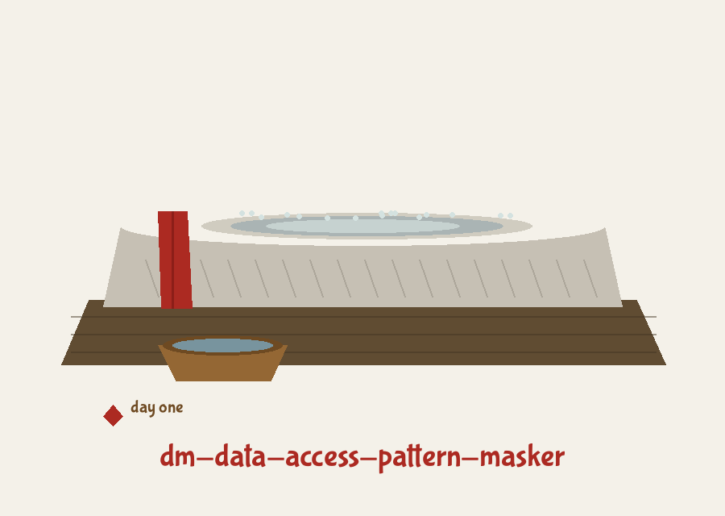
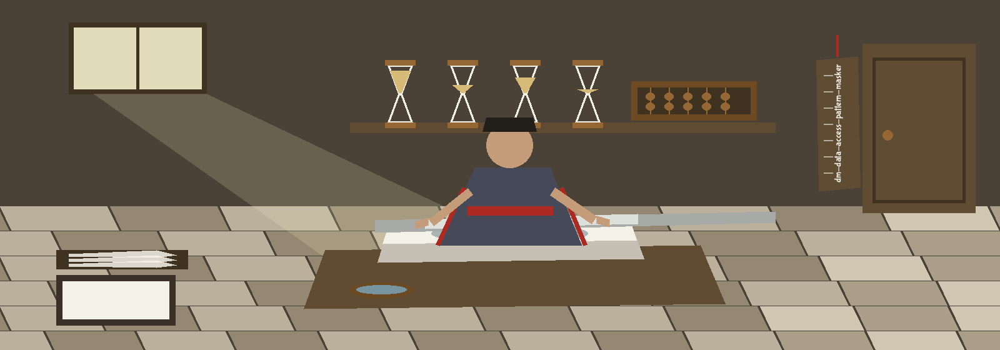

dm-data-access-pattern-masker: Samurai Sword Polisher's Ten Days


Seed, for Drawing the Same Shuffle Again First Row Is a Header
Order Changes, Contents Do Not
The Header Row Can Be Lost
One Requirement Only
Day one
The whole job, stated small
This program shuffles the rows of a CSV file. Row order changes. Row contents do not. No value inside any row is altered, added, or removed. The point is sequence itself: someone watching which records get touched, and in what order, learns nothing from the order this program leaves behind.
Day two
The working call
python3 main.py [input CSV path] [output CSV path], with two optional flags after the paths. Placeholders only are printed here. No path from any real machine is printed, and no record from any real file is printed.
Day three
Install
git clone https://github.com/ShadowGuard-AI/dm-data-access-pattern-masker
Note: the organisation spelling was corrected here. The clone line on this site reads ShadowGuard-AI, hyphenated. The README prints that organisation without its hyphen.
Day four
Controls in parser order
Input file, positional, a CSV path. Output file, positional, a CSV path, with this refusal beside it: where the resolved output path is the input file itself, the run refuses and exits 1 before anything is written. Seed, optional, an integer, default none: with a seed, the same shuffle can be drawn again; without one, it cannot. Header, a flag that is off by default: it declares that the first row is a header row.
Day five
The Header Row Can Be Lost
With the flag absent, the file is read with no header at all. A headed CSV run without the flag has its header row treated as an ordinary record. That row gets shuffled into the body of the output, and the run still reports success. With the flag present, the header is read as a header, kept out of the shuffle, and written back as a header. The README never explains this trap. Its parameter line says only that the flag specifies a header row and defaults to False, and gives no warning of it.
Day six
How the shuffle is done
The program builds the list of row positions, shuffles that list with the random module, then takes the rows positionally in the new order. Output is written with no index column, so the old positions are not carried across to betray the old order. Values travel with their own row. Columns stay where they were. Only the sequence of rows differs between input and output.
Day seven
One Requirement Only
Python with pandas, at 2.0.0 or later, is the single named requirement. The requirements file names pandas and nothing else. The input must be a CSV the pandas reader can parse, because a read failure is wrapped and raised, and the run ends at exit 1.
Day eight
How a run can end
Success logs that shuffling is complete. A missing input file ends the run at exit 1. An output path that resolves to the input ends it at exit 1. A read failure or a write failure ends it at exit 1. There is no partial output promise and no second mode.
Day nine
Limits, stated plainly
The tool changes order and nothing else. It offers no masking of values, no column handling, and no protection once the output order is compared against a known copy of the input. The position list is built from the frame index and fed to a positional indexer, which is sound for the plain positional index the CSV reader returns, and would silently shuffle the wrong rows for a frame carrying any other index. The seed is applied through the global random generator after the file is read, so a seeded run reproduces the shuffle only for the same input rows in the same input order.
Day ten
Licence
Copyright (c) ShadowGuard-AI
Note: that licence line is corrected in one respect only on this site. The organisation in that line is given in its hyphenated form here, and the correction is noted rather than hidden. A separate fact sits beside it. The repository LICENSE file holds the MIT License. Its holder line gives the pen name in full, followed by a parenthetical given name with a single initial, followed by the account handle. That fact is recorded. The line itself is not reproduced, and the initial is not expanded.
A finished shuffle
A tray that reports a finished shuffle carries one small hourglass at its corner. Trays reporting anything else carry none. ◷
The preserved README record
 # dm-data-access-pattern-masker Masks access patterns to data during masking operations. It can reorder the records before applying other masking techniques. This prevents attackers from inferring information about the data or masking algorithm through observing access timings and order. Simple to implement with random index shuffling. - Focused on Tools designed to generate or mask sensitive data with realistic-looking but meaningless values ## Install `git clone https://github.com/ShadowGuardAI/dm-data-access-pattern-masker` ## Usage `./dm-data-access-pattern-masker [params]` ## Parameters - `input_file`: Path to the input CSV file - `output_file`: Path to the output CSV file. It must not be the input file: if the output path resolves to the input file, the run refuses and exits 1 before any write. - `--seed`: Optional seed for the random number generator (for reproducibility). - `--header`: Specify if the input CSV file has a header row. Defaults to False. ## License Copyright (c) ShadowGuardAI